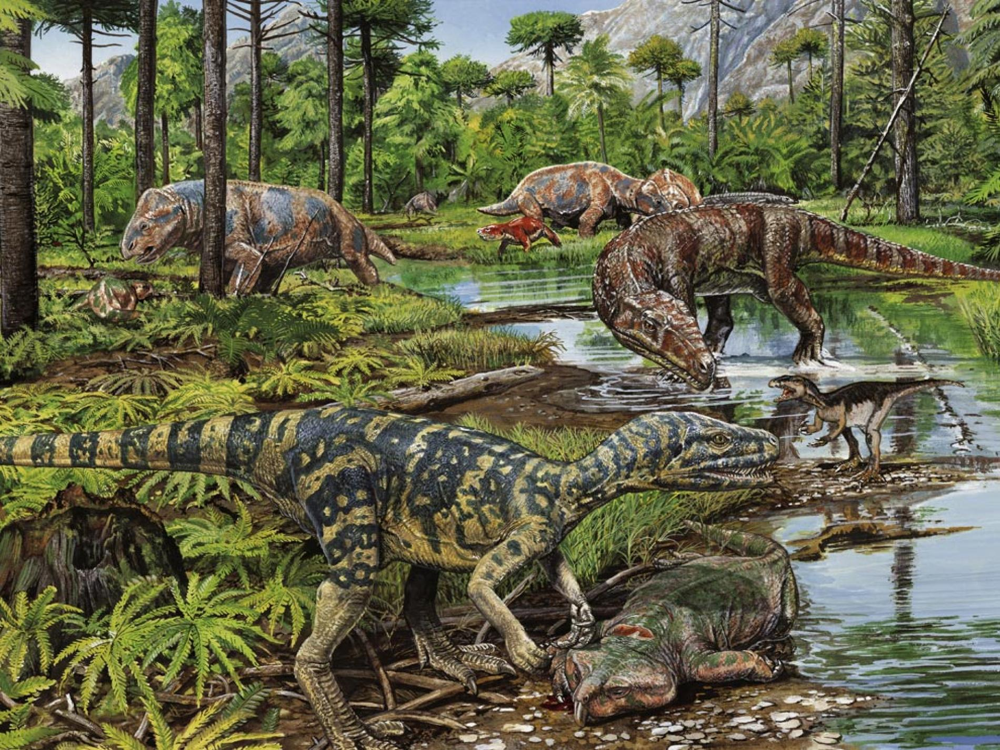
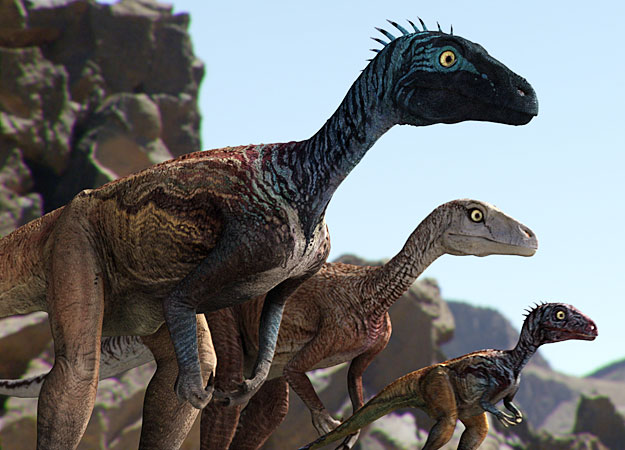

The first Theropods appeared in the Mid Triassic period, about 230 mya. The Permian Mass Extinction allowed them to evolve. However, they were very small, no bigger than 6 feet long. Most were dwarfed by other Archosaurs living in the same habitat, like Archosaurs, Cynodonts, Dicynodonts, Rauisuchians, etc. This is a common Triassic scene.

Eoraptor was one such early Theropod. It was probably the first dinosaur to evolve, and about a meter in length. It preyed on small lizards and other animals. A few other examples are Staurikosaurus and Herrerasaurus. This is a picture of Eoraptor.

As dinosaurs started to dominate and other types of animals went extinct, predators grew bigger and more advanced. They started to diversify. Soon, Coelophysoids evolved in the Late Triassic.
Copyright Theropod Encyclopedia, 2019 (Images from Internet)